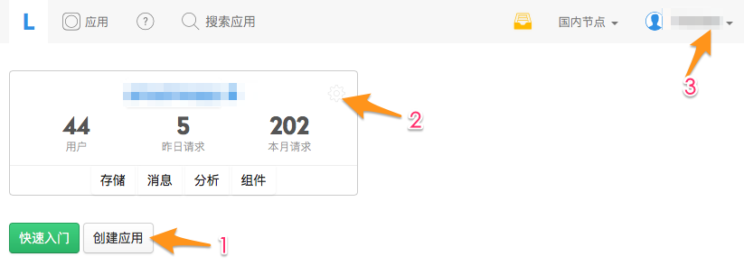
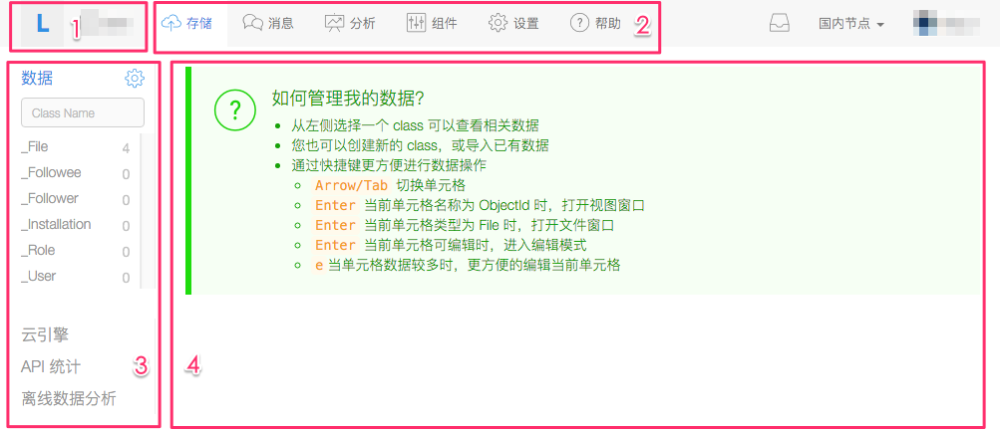
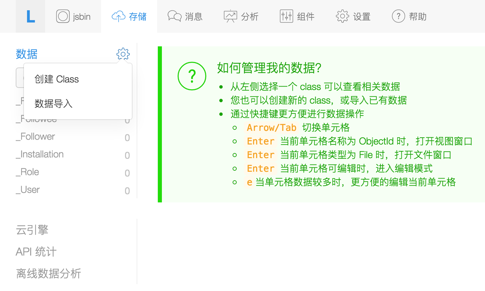
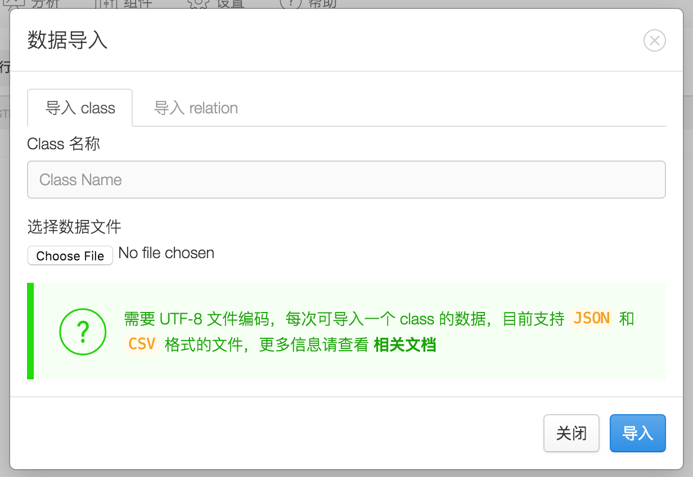
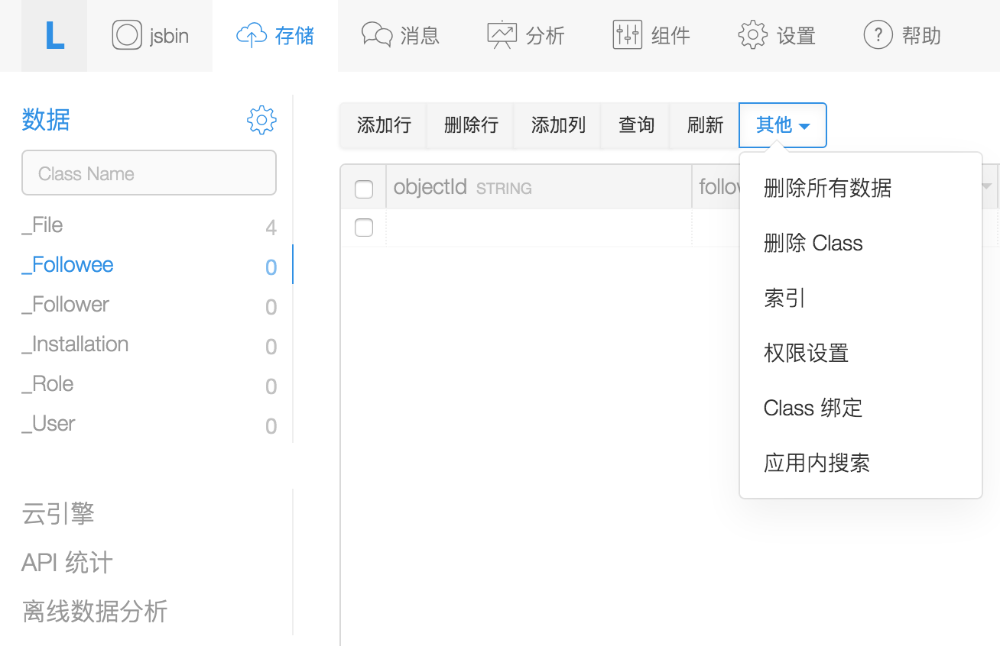
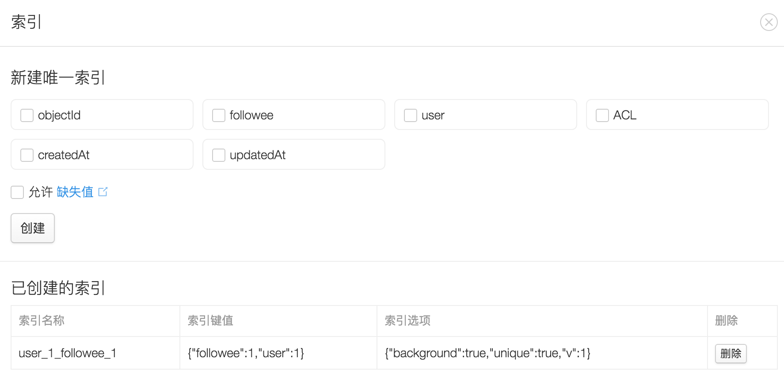
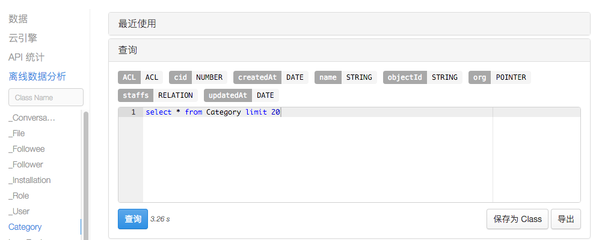

「API 统计」：这里展示了应用使用数据存储服务的一些统计信息，包括一段时间内存储 API 总的请求量、每天的请求量、按操作类型／Class 分类统计的请求量，文件的存储空间和流量变化趋势等等，由于这些数据可以直接反应我们应用的流量和云端性能，能够指导我们进行数据模型和代码优化，同时也与每月账单息息相关，所以请开发者一定仔细查看这里展示的统计数据。
「离线数据分析」：标准的增删改查 API 无法一次处理大量数据，所以我们额外提供了这一功能，允许大家通过 SQL 来进行大规模、实时的数据分析和挖掘。
管理控制台使用指南
在 LeanCloud 平台创建好应用之后，如何查看后台数据，如何查看各服务的使用情况，如何更改应用设置，如何修改账户信息，等等问题，都不可避免要跟我们的「控制台」打交道了。
创建应用
对于刚开始接触 LeanCloud 的用户来说，看到的控制台多会是如下图所示的样子：

在这里显示的内容和操作项简单明了，基本上大家一看就能够操作，例如：
箭头 1指示的按钮，可以创建新的应用。箭头 2指向的区域，包括一些最基本的统计数据也一并展示在了应用卡片中，之后点击这里蓝色的应用名链接，则可以进入单个应用的数据管理和设置页面。箭头 3指向的是与开发者账户相关的操作链接。管理应用数据
我们在前面页面，在单个应用卡片中点击应用名链接，则可以进入应用数据和配置管理页面，如下图所示：

这里主要分为四块区域：
区域 1显示应用名，并允许我们快速切换应用（点击应用名）。区域 2按照服务类型，将应用数据做了一级分类。这里分成了存储（包括结构化数据存储、文件存储、云引擎、离线数据分析等功能）、消息（包括实时通信、消息推送和短信服务三种）、分析（应用/用户分析结果展示）、组件（其它扩展组件，如用户反馈、应用内搜索、社交组件等）四个大类，也增加了应用设置菜单。区域 3则是一级服务下，具体数据、信息组织的二级菜单。区域 4这里展示具体的数据或者结果信息。我们重点看看四个一级菜单下的内容。
存储服务数据管理
控制台 > {应用} > 存储 服务下，包含了四大菜单：
AVObject及扩展子类）和非结构化数据（AVFile）的内容，支持在页面上直接进行增删改查，对于少量的数据维护操作，可以在这里直接进行。特别地，对于下列数据管理需求，我们都可以在控制台完成：
创建新的 Class
进入 存储 > 数据 页面，点击「数据」菜单右边的齿轮按钮，可以为应用增加新的 Class，如下图所示：

在接下来的创建 Class 页面中，我们可以指定 Class 名字，也可以选择 Class 类型：普通表还是日志表。
本地数据导入 LeanCloud
在上面的页面，大家可以看到「数据导入」菜单，它就是为方便批量导入本地数据准备的。详细的数据导入页面如下图所示：

本地文件的格式要求必须是 JSON 或者 CSV 文件，且需要 UTF-8 文件编码。我们支持两种数据导入：
.csv或者.json结尾，我们以此来判断导入数据的类型。JSON 文件格式
JSON 格式要求是一个符合我们 REST 格式的 JSON 对象数组，或者是一个包含了键名为 results、值为对象数组的 JSON 对象。例如：
【日期】示例中，
publishedAt是一个日期型字段，其格式要求请参考 REST API · 数据类型。【密码】导入用户密码需要使用一个特殊的字段
bcryptPassword，并且完全遵循 Stackoverflow · What column type/length should I use for storing a Bcrypt hashed password in a Database? 所描述的加密算法加密后，才可以作为合法的密码进行导入。【关系】导入 Relation 关联数据时，需要填写要导入的 Class 名称、导入后的字段名称、关联的 Class 名称等信息，才能完整导入，例如：
其中：
owningId： 将要导入的 Class 表内已经存在的对象的 objectId。relatedId：将要关联的 Class 里的对象的 objectId。例如，Post 有一个字段 comments 是 Relation 类型，对应的 Class 是 Comment，那么 owningId 就是已存在的 Post 的 objectId，而 relatedId 就是关联的 Comment 的 objectId。
批量导入多个 Class 的 JSON 文件格式
我们现在还支持一个 JSON 文件导入多个 class，要求格式如下：
其中
classes数组指定文件中的要导入的 class 列表，然后每个 class 名称对应一个要导入的对象数组即可，对象格式参见上文 JSON 文件格式classes:的值为准。CSV 格式文件
导入 Class 的 CSV 文件格式必须符合我们的扩展要求：
int、long、number、double、string、date、boolean、file、array、object、geopoint等。导入的
geopoint格式是一个用空格隔开字符串：导入的 Relation 数据，比 JSON 简单一些，第一列对应 JSON 的
owningId，也就是要导入的 Class 的存在对象的 objectId，第二列对应relatedId，对应关联 Class 的 objectId。例如：CSV 导入也支持 Pointer 类型，要求类型声明为
pointer:类名，其中类名就是该 Pointer 列所指定的 className，列的值只要提供 objectId 即可，例如：云端数据导出到本地
LeanCloud 不会把大家强制绑定到自己平台上，所以我们也提供渠道让大家随时把数据导出去，具体操作请看后文介绍
设置／修改 Class 的 ACL 权限
进入 存储 > 数据 页面，再进入右侧的数据展示区域，点击上排操作菜单中的「其它」菜单项，可以看到「权限设置」，如下图所示：

对于每一个 Class，我们允许对如下几种操作分别授予用户操作权限：
可以授权访问的用户类型有如下三种：
具体的权限设置可以参考文档。
批量清理一个 Class 下的数据
进入 存储 > 数据 页面，再进入右侧的数据展示区域，点击上排操作菜单中的「其它」菜单项，可以看到两种批量清理数据的方式：
给某个 Class 数据建索引
数据查询是很普通的操作，与传统关系型数据库一样，索引的优劣对于我们查询性能的影响非常大。在上图显示的「其它」菜单项中，我们也可以进入「索引」维护界面：

注意：
应用之间共享部分数据
同一个帐户下的其他应用（称为「目标应用」）下的 Class（称为「目标 Class」）绑定到当前 Class，访问当前 Class 数据，将会访问到目标应用下的目标 Class 数据，这就是我们所谓的「Class 绑定」功能，用来解决应用之间数据共享的需求。最简单的应用就是 _User 表共享，不同应用之间打通帐户，可以相互注册和登录。
在之前显示的「其它」菜单项中，我们可以进入「Class 绑定」界面。当 Class 绑定设置好之后，当前 Class 绑定之前存储的数据不会丢失，而是被「隐藏」起来，在解除绑定后仍然可以访问到。
云引擎中查看节点运行状态
进入 存储 > 云引擎 > 云引擎实例 菜单，右侧区域会展示所有云引擎实例的运行状态信息，在这里你可以增加新的实例，也可以停止正在运行的实例。 云引擎实例运行的日志，则可以在 存储 > 云引擎 > 日志 这里看到。 云引擎实例运行状态的统计信息，则可以在 存储 > 云引擎 > 统计 看到，这里包含了云引擎运行过程中的调用次数、页面展现次数等核心指标的统计结果，你需要密切关注这里的指标，已决定是否需要对云引擎进行扩容。
云引擎中自定义二级域名
云引擎默认为每个应用提供了一个二级域名
<应用的域名>.leanapp.cn（美国节点则为<应用的域名>.avosapps.us），允许开发者将 web 应用部署到该域名之下运行，支持静态资源和动态请求服务。这个二级域名是可以修改的，你可以到 存储 > 云引擎 > 设置 里面设置自定义的子域名。同时，我们也支持绑定到你自己的独立域名，请进入 应用控制台 > 账号设置 > 域名绑定，按照步骤提示操作即可。
云引擎中创建定时器
云引擎中支持定时任务，你可以在 存储 > 云引擎 > 定时任务 这里进行设置，详细操作流程请参考：定时任务。
离线数据分析
数据存储 API 以及 CQL 查询对于结果集大小有限制，并且也不支持特别复杂、耗时较长的计算操作，对此，我们特别提供了「离线数据分析」这一功能，来支持产品和运营层面需要的数据统计／挖掘需求。 进入 存储 > 离线数据分析 菜单，就可以对应用下的所有数据进行 SQL 查询了，如下图所示：

离线分析结果导出或存入另一个 Class
离线分析的结果是可以导出到本地的，并且也支持把结果再次存入云端的某个 Class 中。从上图可以看到，离线查询结果出来之后，右边操作区域的「保存为 Class」和「导出」按钮就变成可用状态了，这时候你可以选择把展示到界面的结果下载到本地或者再次存入云端。
读懂 API 统计结果
在使用 LeanCloud 数据存储的时候，我们应用每天的调用量如何，不同平台过来的请求量有多少，里面哪些请求比较耗时，主要是什么操作导致的，如何才能得到更好的性能提升用户体验，等等数据都离不开 API 统计结果。 进入 存储 > API 统计 菜单，你可以看到：
Create 请求、Find 请求、Get 请求、Update 请求、Delete 请求等不同操作类型下每天的请求量变化趋势，方便我们对特殊的操作来做 profiling 和优化。消息服务数据管理
控制台 > {应用} > 消息 服务下，包含了三大菜单：
特别地，对于下列管理需求，我们都可以在控制台完成：
查询实时通信中某个用户是否在线
在 消息 > 实时消息 > 帮助 菜单下，输入单个用户的 id，可以查询其在线状态。
设置 iOS 离线推送配置项
在 消息 > 实时消息 > 设置 菜单下，可以打开／关闭「iOS 用户离线推送」的开关，也可以设置推送使用的证书和推送文本（什么都不设置即表示关闭「iOS 用户离线推送」功能）。
取消尚未开始的定时推送任务
定时进行消息推送对于产品运营人员来说是非常实用的一项功能，但有时候，我们也想取消掉还未执行的定时推送请求。 你可以在 消息 > 推送 > 定时推送 菜单下，查看所有定时推送任务和执行状态，你也可以在这里取消掉某个定时任务。
设置多个推送证书
LeanCloud 的消息推送是可以支持多个 iOS 证书的，这一点对某些应用来说会非常有用。譬如我做了一个打车的 O2O 应用，我的产品分为司机端和乘客端两个 app，它们是以不同 app 上传到 App Store 的，但是内部我在 LeanCloud 平台是同一个应用，我需要在乘客发出用车需求之后，可以尽快将消息推送到附近的司机。 你可以在 消息 > 推送 > 设置 菜单下，上传多份证书，并给他们赋予不同的名字，这样以后推送消息的时候，就可以准确地对不同用户使用不同证书。
分析服务数据展示
控制台 > {应用} > 分析 服务下，主要包含了五大菜单：
扩展组件的设置和管理
控制台 > {应用} > 组件 服务下，主要包含了三大菜单：
应用设置
控制台 > {应用} > 设置 页面，我们可以进行如下操作：
特别地，对于下列管理需求，我们都可以在控制台完成：
把应用转让给别人
应用是可以在不同账号下转让的，在 控制台 > {应用} > 设置 > 基本信息 菜单下，右侧区域下方有一个「转让应用」的操作按钮，可以完成这一需求。
把应用发布到应用墙，让 LeanCloud 帮你推广
提交应用到 LeanCloud 应用墙，让更多人发现你的产品。在 控制台 > {应用} > 设置 > 基本信息 菜单下，右侧区域有一组「应用墙发布设置」的表单，可以完成这一需求。
重置遭泄漏的 appKey
在 控制台 > {应用} > 设置 > 应用 Key 菜单下，可以重置应用的 master Key。
LeanCloud 平台上，对每一个应用，有如下三个 id／key 用于标识 app 身份信息：
我们在使用过程中要注意保护好 app key 和 master key，特别是 master key，千万不能泄漏，因为它会绕过所有 ACL 和 Class 权限等授权校验机制。
添加协作者
在为应用增加协作者的时候，我们可以添加个人协作者，也可以添加团队协作者，这两者之间区别如下：
不止于此，如果结合协作者权限来看，个人／团队协作者之间的差异会更大。
在添加协作者的时候，LeanCloud 也支持限定协作者的可见范围（权限）。譬如我们可以把应用的统计分析结果公开给运营团队，而不让他们直接操作后台数据，这时候就可以在添加协作者的时候，选择「自定义权限」，来进行详细设置。
数据导出
你可以导出所有的应用数据（包括加密后的用户密码），只要进入 控制台 / 应用设置 / 数据导出 点击导出按钮即可开始导出任务。我们会在导出完成之后发送下载链接到你的注册邮箱。
导出还可以限定日期，我们将导出在限定时间内有过更新或者新增加的数据。
我们还提供了数据导出的 RETS API。
导出用户数据的加密算法
导出的
_User表数据会包括加密后的密码password字段和用于加密的随机盐salt字段。 LeanCloud 不会以明文保存任何用户的密码，我们也不推荐开发者以明文方式保存应用内用户的密码，这将带来极大的安全隐患。如果你要在 LeanCloud 系统之外校验用户的密码，需要将用户的传输过来的明文密码，加上导出数据里对应用户的salt字段，使用下文描述的加密算法进行不可逆的加密运算，其结果如果与导出数据里的password字段值相同，即认为密码验证通过，否则验证失败。我们通过一个 Ruby 脚本来描述这个用户密码加密算法：
hvhasher.update(hv)，每次hv都更新为最新的hasher.digest加密值假设：
password实现代码：
非常感谢用户「残圆」贡献了一段 C# 语言示例代码：
开发者信息
在控制台，点击右上角的头像和用户名，上下文菜单中选择「账号设置」，可以查看、修改账号信息。
开发者信息
为了更好的服务开发者，建议您完善开发者信息，填写真实姓名、电话号码。比如：
邮箱和密码
实名认证
按照国家法律法规要求，所有使用了 LeanCloud 云引擎的网站托管功能的开发者必须进行实名认证。
告警设置
这里可以设置短信账户的告警余额。对于使用短信服务的用户而言，如果你短信账户的余额低于这里设置的阈值，LeanCloud 会发送短信、邮件通知。
偏好设置
在「偏好设置」里，可以选择退订我们发送的产品相关邮件（财务和告警类邮件无法退订）。
团队管理
为了方便多人协作，可以创建团队。在单个应用「设置」「协作者」菜单里，可以添加该团队作为当前项目的协作者，这样整个团队的成员都会拥有相关的权限。
账单和付款
在控制台，点击右上角的头像和用户名，上下文菜单中选择「财务」，可以查看我们的账单，并完成充值、付款等操作。
财务概况
这里展示了账户下的重要财务信息：
账户充值：支持支付宝，和银行转账汇款，请参考 如何付费。账户里面的余额可以用来支付每月账单（每个月结束后自动扣费）。也可以用来购买短信，这个需要主动购买，指定短信条数。 购买短信：短信需要单独购买，这个是实时扣除的，当短信剩余条数偏低时，会通过邮件和短信方式告知开发者。
账单
每个月会产生一份账单，包括当前账户下所有应用。会详细展示每个应用每个服务的费用明细。
发票
请参考 如何申请发票。